Что бы получить шанс на выигрыш очень и нужных и замечательных призов, Вам стоит следить за нами в инстаграмме по этой ссылке:
https://www.instagram.com/ekspres_kurs_Что бы получить шанс на выигрыш очень и нужных и замечательных призов, Вам стоит следить за нами в инстаграмме по этой ссылке:
https://www.instagram.com/ekspres_kurs_Экспресс-курс – это БЕСПЛАТНЫЙ проект, где ты сможешь получить массу важной и полезной информации.
Меню \ тренировки \ полезные статьи и призы за активность.
Как же поучаствовать в экспресс-курсе? Тебе нужно подписаться на наставников в инстаграме и всё!
Если сейчас в твоей голове возник вопрос: «зачем?», то тебе стоит дочитать!
Наставники – это блогеры, которые предоставили полезную и нужную информацию для курса НЕ К ЛЕТУ, то есть, для тебя.
Но на самом деле, в их блогах куда больше полезной и БЕСПЛАТНОЙ информации.
Ссылки на блоги наставников можно найти ниже, там же есть информации о их страничках в инстаграме.
@kate_rightfood
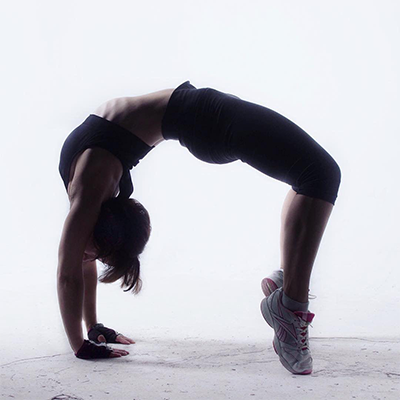
@alena_rightfood
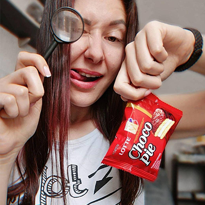
@nutrio_kris
@moi55kg
@dashuta.pp
@reginchik__diakonu
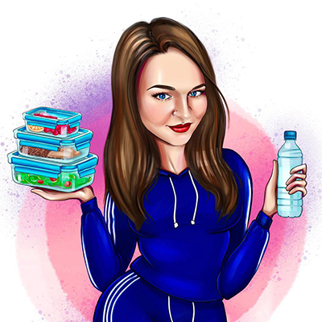
@marine.might
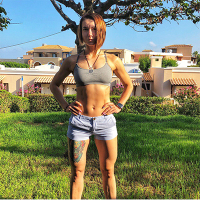
@klaral_pp
@schokolieb
@body_jul
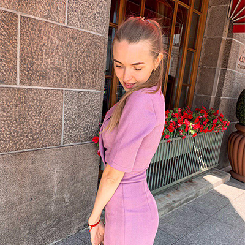
@nastya_stasya68
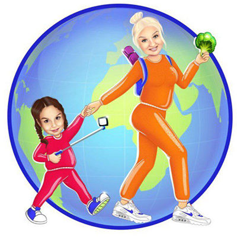
@coolikova_ann
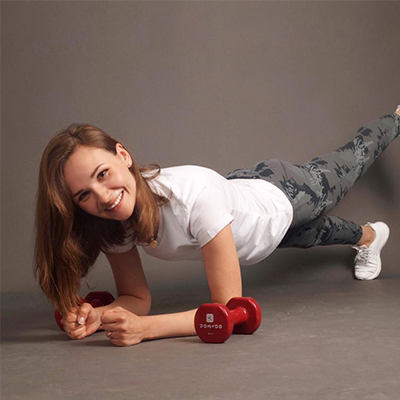
@fitness_lizi
@nk.health
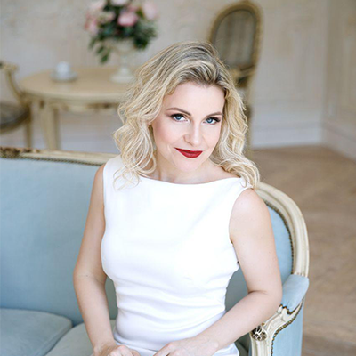
@e.demchuk_
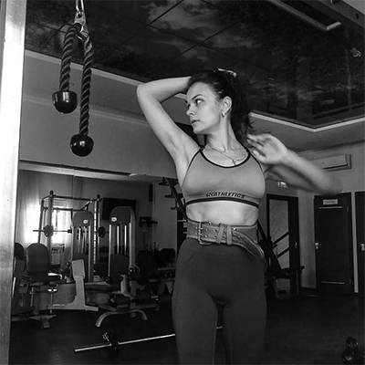
@nataha_budanova
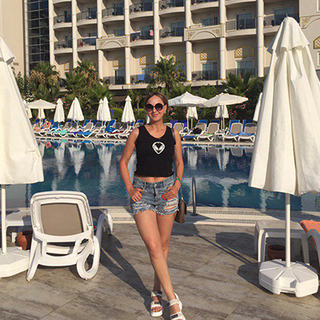
@maria_knows_
@rakamaka.fit
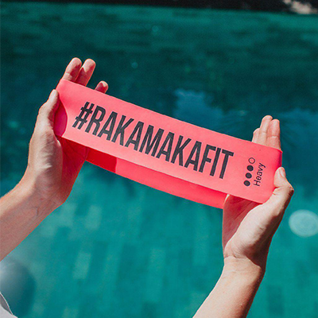
@marlena_corner
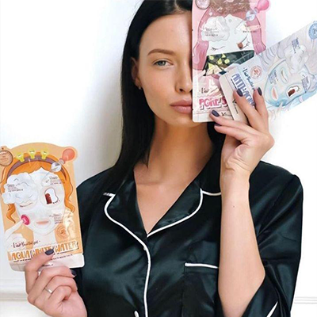
@pit_and_food
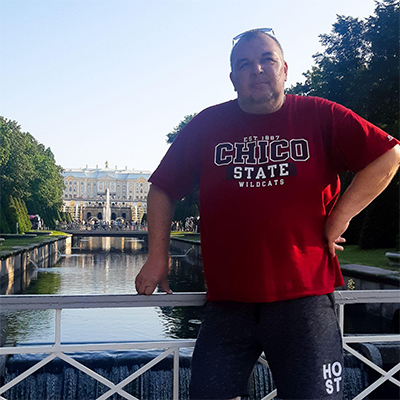
@kate_good_fitt
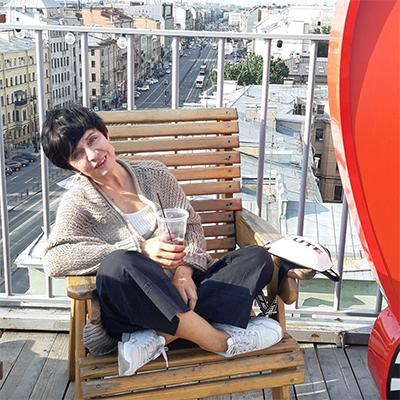
@_valentum_
Я Катя @kate_rightfood - специалист рационального питания и персональный фитнес-тренер и будущий нутрициолог. В конце поста тебя ждёт подарок ⠀
Мой блог АнтиПП, в котором я пишу о глупых мифах ПеПе, питания, похудения и фитнеса ⠀
Цель моего блога - помочь людям поменять отношения с едой, избавить от страха перед абсолютно любым продуктом и научить рациональному и комфортному сбалансированному питанию. ⠀
Здесь ты узнаешь:
Я разрушаю многие глупые мифы похудения и питания на основе исследований, доказываю, что не бывает продуктов, от которых толстеют и что стройной фигуры легко добиться без изнурительных тренировок и диет ⠀
В сториз я часто приседаю в нестандартных местах и обычной одежде с лозунгом «приседай везде и всегда». Даже свадебное платье этому не помешало ⠀
Также в сториз у меня постоянно движуха: разные челленджи и тренировки дома и в зале. ⠀
Часто я открыто негодую по поводу многих блогеров а-ля «диетологов», «тренеров» и «нутрициологов», которые живут стереотипами похудения (порой абсурдными) и пишут устарелую или непроверенную информацию. ⠀
Я пишу только проверенные и современные данные на основе знаний физиологии, анатомии, биохимии и других наук простым языком ⠀
Хочешь БЕСПЛАТНО получить?: ⠀
Тогда подпишись на меня @kate_rightfood и заполни заявку в шапке моего профиля
Менеджеры компаний умоляют её удалять посты с разносом состава их продукта!!
Тебе больше не придется изучать этикетки! Потому что ревизорро всё сделала за тебя!
Всё еще пугают Е-шки, длинный список состава, непонятные добавки? Всё гораздо проще, чем ты думаешь!
Алёна @alena_rightfood у себя в блоге делает разборы твоих любимых и самых популярных продуктов!
Она разоблачает горе-маркетологов, которые пытаются продать нам некачественные продукты. Совсем недавно она устроила разнос знаменитых Energy Diet! Она пишет самую горькую правду, недавно она разнесла состав Бомббар, что менеджер просил удалить пост!!
Также у нее есть рубрика – «батл составов», где она сравнивает категории продуктов, дает им оценку и выбирает сильнейших (в таком батле сражались йогурты, сырки, протеиновые батончики и печеньки, шоколад без сахара и даже конфеты)
А также каждую неделю бесплатно разбирает продукты, которые ей присылают подписчики! А также ежедневные разборы в сториз!
В сториз я часто приседаю в нестандартных местах и обычной одежде с лозунгом «приседай везде и всегда». Даже свадебное платье этому не помешало
Также в сториз у меня постоянно движуха: разные челленджи и тренировки дома и в зале.
А также каждую неделю бесплатно разбирает продукты, которые ей присылают подписчики! А также ежедневные разборы в сториз!
В ее блоге ты узнаешь:
Всё это ищи у Алёны тут - #rf_ревизорро
И узнай, как она похудела на 21 кг ежедневно употребляя сладкое??? 😋
Подписывайся на Алёну
👉 @alena_rightfood
оставляй комментарий под последним постом и она подарит тебе калькулятор КБЖУ и инструкцию по похудению!
И все это - один человек!😱 Встречайте - @nutrio_kris
👙 поможет тебе привести тело в порядок с помощью коррекции пищевого поведения, здорового питания и тренировок. Она полностью изменит твои пищевые привычки!
🍕🍔🍟➡️🍖🌰🍅
В своём блоге пишет о том, на что стоит обращать внимание при выборе продуктов , как обезопасить свою семью от опасных добавок и как стать стройной, улучшить самочувствие с помощью питания и БЕЗ строгих ограничений❌
✔️ самое важное - составляет ТОЛЬКО индивидуальные программы, исходя из потребностей человека, на основе его индивидуальных показателей и образа жизни.
💯 научный подход к вопросу похудения.
🌱 У нее в блоге вы найдете очень много интересных и полезных постов о продуктах питания, спортивном питании, психологии похудения и, конечно, тренировках💪
Знакомьтесь, это Екатерина @moi55kg
Дарья @dashuta.pp, сертифицированный нутрициолог и многодетная мама, учит худеть без запретов, делится вкусными простыми рецептами из доступных продуктов. Рассказывает как самостоятельно составить себе меню и не провести при этом всю жизнь у плиты.😜
Очень вкусный и один из самых душевных профилей у @reginchik__diakonu🥰вас там точно ждут и любят❤️❤️❤️ Она научит каждую вкусно и бюджетно готовить и при этом худеть☝️
Нереальные вкусные и простые завтраки за 5 минут не оставят вас равнодушными❤️
Рубрика :"контейнеры на 3 дня"станет вашим помощником на кухне👍🏻
@reginchik__diakonu похудела более,чем на 40 кг. Была участницей проекта «Я ХУДЕЮ НА НТВ» где исполнила свою заветную мечту❤️
Заходи к @reginchik__diakonu и ты найдёшь себе помощника и соратника в её лице ❤️❤️❤️
Это Марина 🔝️
🍯 В арсенале у Марины@marine.might более 150 полезных фитнес рецептов для всей семьи.
🏋 В её блоге Вы найдёте более 250 интересных и эффективных тренировок для дома и тренажерного зала.️
@marine.might просто чудесная мама, которая изменила себя после 30 лет, решилась одеть кимоно и вместе с сыном начать изучать боевые искусства 🥋❤️
Перешагнула через свои страхи и мнение окружающих.
Уже более двух лет @marine.might сама делает полезный домашний хлеб 🍞
Если Вы хотите раз и навсегда изменить себя и свой образ жизни, успевать одновременно делать кучу дел и при этом хорошо выглядеть, то загляните на страничку к Марине, она с радостью поделится с Вами.
Знакомьтесь - Аня @klaral_pp
Живое и интересное общение прилагается.
А ещё она ведьма и худеет людей бесплатно, только тсссс😂😂😂😂.
Хочешь правильно питаться, но не знаешь, с чего начать?
С радостью представляем вкусный и красивый профиль с полезными и интересными рецептами - @schokolieb ❤️
Мари @schokolieb готовит вкусняшки для души и стройной фигуры🍰🍮🍡
Мари каждый день показывает свои рационы в сторис, можно черпать идеи для вдохновения, готовить быстро и без заморочек 👌🏽
Также Мари - гуру вкуснейших запеканок, на её страничке более 20 видов разных запеканок, с калорийностью 100ккал на 100г😱 переходите по #schokoзапеканка 🍰
Она действительно заряжает мотивацией, рассказывает, как пришла к правильному питанию, что такое кбжу и как его рассчитать, все здесь #schokolieb_личное 😊
Заходите к @schokolieb за подробными рецептами и фотографиями, которые разогреют ваш аппетит 😋
Хотите больше БЕСПЛАТНЫХ тренировок на каждый день? Тогда хочу познакомить вас с Юлей @body_jul
У неё на страничке уже более 80 тренировок сохранено в актуальном для вас!
Юлины тренировки для тех у кого мало свободного времени, так как ее тренировки длятся всего 20 минут, заходи к ней в сторис и смотри 🤗
Также @body_jul
🏫А ещё, Юля учитель и если вы молодая мамочка с ребёнком, то вам будет полезна ее страничка! Она рассказывает о том, что сейчас происходит в школе, как обучать и воспитывать детей от 5 до 11 лет 👌🏼
❗️ @body_jul занимается проблемой не только похудения, но и набора массы, так как сама проходит этот нелёгкий путь
Первая Участница проекта «Я худею на НТВ», которая решилась раскрыть все секреты у себя в профиле🤩
Теперь она ЗНАЕТ как быстро похудеть и готова рассказывать об этом всем бесплатно!!!🔥
В сториз бесплатный ПП марафон и ДЕТОКС марафон!
Сейчас она худеет на 5 тысяч в месяц и рассказывает о каждом приеме пищи!
Раз в месяц бюджетно летает в новый город ✈️ И научит тебя так же!
А ещё , Настя влюбляет в себя в сториз с третьего раза😂
@nastya_stasya68
В НЕЁ НИКТО НЕ ВЕРИТ, а она берет и делает👍
Настя, знает, как тяжело бывает без поддержки!😱
СКОРЕЕ ЖМИ и переходи в простой и душевный профиль, который поможет тебе узнать много нового и твоя жизнь изменится на все 100%👇
Это Аня👆
Ее блог - это увлекательная мини энциклопедия о правильном питании.
На своей странице Аня делится самыми нужными ПП-шпаргалками, вкусными и полезными рецептами, а также продуктовыми находками и разочарованиями.
Если вы хотите
научиться легко и правильно собирать продуктовую корзину,
с первого взгляда определять качественный продукт на магазинных полках,
самостоятельно составлять себе вкусное и полезное меню,
тогда вам точно сюда👉 @coolikova_ann
БОЛЬШЕ ПОЛЬЗЫ, МЕНЬШЕ ЖИРА❗️
Знакомься - это Лиза.👋 Из девочки с ожирением и расстройством пищевого поведения, она превратилась в крутого фитнес тренера и опытного нутрициолога!💪
Ты все ещё жалеешь себя и грешишь на "широкую кость"? Значит, тебе необходима ежедневная доза "Фитнес Лизи"!😉
Блог @fitness_lizi - это бурлящий источник полезной информации для всех, кто мечтает о сильном, красивом и здоровом теле!🔥
БОМБА-ТРЕНИРОВКИ на все случаи жизни:
Животрепещущие ИНФО-темы:
И МНОГОЕ-МНОГОЕ ДРУГОЕ ‼️
Тебе недостаточно online-мотивации?🤔
Смотришь упражнения, записываешься на марафоны, но никак не можешь заставить себя работать в полную силу?😭
Приходи на offline-тренировки к @fitness_lizi и прокачай свое тело за 2 месяца❗️
РЕАЛЬНЫЕ ТРЕНИРОВКИ - НЕРЕАЛЬНЫЙ РЕЗУЛЬТАТ!🤯
Самые частые женские проблемы – переедание, тяга к сладкому, пищевая зависимость, несбалансированный рацион и, как следствие, лишний вес и неправильные отношения с пищей. Неуверенность в себе и испорченное настроение каждый раз, когда ты смотришь в зеркало 😟...
Девочки, я - Наталья @nk.health знаю об этом не понаслышке ☺️ Большую часть своей жизни я боролась с лишним весом и пищевой зависимостью. Но теперь всё это в прошлом, и я помогаю другим женщинам пройти путь к стройности и здоровью.
Я - специалист по здоровому похудению и пищевому поведению. Нутрициологии я училась и в России, и в США.
Но лишний вес – это не только про питание. Это еще и про психологию. Поэтому сейчас я продолжаю учиться – на психолога по коррекции пищевого поведения.
Если лишний вес, переедание и пищевая зависимость портят тебе жизнь😢, и ты хочешь внедрить здоровые привычки, которые прослужат тебе долгое время, - заходи на страницу к @nk.health
Подписывайся на @nk.health прямо сейчас!
Будем Знакомы✋
Меня зовут Лена @e.demchuk_
И я изменила свою
жизнь 2 года назад🤘
Полюбила!Похудела!Подружилась с едой👍
После рождения двоих детей,я перепробовала массу диет и прочих голодовок.
Но теперь все изменилось.
Я родом из деревни!Где нет спортзалов и гуру фитнеса! Занимаясь спортом дома, добилась отличного результата.
Заходи ко мне🔥🔥🔥
Я точно тебе помогу
Мама в декрете @nataha_budanova похудела на 18 кг
Всем привет 👋
С вами @maria_knows_ и я прекрасно понимаю, как порой бывает тяжело худеть 😔
Прямо сейчас, я прохожу этот сложный путь вместе с вами! Я, можно сказать, одновременно и спикер и участник данного марафона
Моя история отличается от многих тем, что я не похудела на 25 кг, а набрала их 😔 в результате неправильного диагноза, назначении гормональных таблеток и полного расстройства гормонального фона 😔
На своей странице я пишу о том, чем опасен гормональный сбой, как пытаться его выровнять, за какими гормонами нужно следить постоянно, и как не опускать руки и идти до конца!
Медленно, но верно мы все добьёмся своей и обретём фигуру мечты! 😍
Я всегда с вами!
Йоу йоу, привет, крошки! 😜 На связи Настя, создательница крутейших наборов эспандеров и фитнес лент @rakamaka.fit 😀🤘С ними можно заниматься где угодно: дома, на улице, на даче, в любой поездке! Фактически, это тренажёрный зал в 👜💪 С таким набором лето точно будет продуктивным! 😉
После рождения дочки мне хотелось поскорее прийти в форму, но возможности ходить в зал не было. Поэтому я задумалась о домашнем инвентаре, который помог бы мне в этом. Протестировав все возможное оборудование, я поняла, что фитнес ленты и эспандеры – это самый удобный и эффективный вариант. ❤️ Но проблема заключалась в том, что надлежащего качества резинки в России найти просто нереально, а заказывать из-за границы очень дорого.После рождения дочки мне хотелось поскорее прийти в форму, но возможности ходить в зал не было. Поэтому я задумалась о домашнем инвентаре, который помог бы мне в этом. Протестировав все возможное оборудование, я поняла, что фитнес ленты и эспандеры – это самый удобный и эффективный вариант. ❤️ Но проблема заключалась в том, что надлежащего качества резинки в России найти просто нереально, а заказывать из-за границы очень дорого.
Так родилась идея своего производства эспандеров и фитнес лент #RAKAMAKAFIT Около года я работала над созданием своего детища, искала, тестировала, выбирала лучшее, продумывала условия заказа и доставки.
Мне как любой маме были важны качественные характеристики резинок. ✊ Ведь пока я занимаюсь, мой ребенок тоже может играть с лентами, брать их в рот и пытаться порвать)) Поэтому большое внимание уделила безопасности, надежности, экологичности материалов ♻️ @rakamaka.fit изготовлены из 100% натурального латекса. Он безвреден для аллергиков, детишек и животных. Я учла каждый элемент эспандеров (манжеты, рукоятки, карабины) и полностью уверена в качестве своей продукции. 👌
Моя миссия – предоставить вам эффективное, надежное и в тоже время легкое оборудование для домашних тренировок, которое я воплотила в своем фирменном бренде #RAKAMAKAFIT 💚💙❤️💜
И совсем скоро вместе с Сашей и Настей разыграем мои фирменные наборы @rakamaka.fit
Самый дружелюбный и полезный магазин корейской косметики 😍
Знакомьтесь! @marlena_corner 🔥
В их профиле вы найдёте:
💯 настоящие и качественные корейские бренды. Никаких подделок и копеечных аналогов 🙅
💣 низкие цены и приятные скидки 💸
💥 самую нужную информацию по уходу за кожей и волосами, комплексы гимнастики для лица и даже разборы составов 👏
💕 отзывчивых консультантов, которые всегда помогут с выбором и ответят на все ваши вопросы 😀
😷 самого настоящего врача среди их консультантов 👍
📦 Быструю доставку и красиво упакованные посылки 🌸
Осторожно! Совершив одну покупку, скорее всего вы станете постоянным клиентом 😉
ПАПА ГОТОВИТ🔥
Не знаешь как разнообразить свой рацион!?
Не можешь найти САМЫЕ простые, но вкусные рецепты?!
Тогда @pit_and_food это СТРАНИЧКА ДЛЯ ТЕБЯ😱😱😱
НЕ дорого, вкусно, просто и НЕОБЫЧНО - жена и трое детей легко подтвердят 😉
Подписывайся на @pit_and_food и готовь с удовольствием!
Всё ложь!
Знакомьтесь , это @kate_good_fitt !
Катя уже научила СОТНИ девушек есть картошку на ночь и худеть💃
Домашние тренировки ,полезные статьи ,идеи завтраков ,ужинов и обедов
- всё это простым и понятным языком!
Огромное количество ПОЛЕЗНОЙ информации у Кати в профиле👍
И всё это совершенно БЕСПЛАТНО!😱
Не веришь?
Убедитесь сама , 🔥Кате 44🔥 и у неё 3 детей ,а фигурка ,как у 20 -летней👍
Ты устала от диет и бесконечных запретов?
Катя @kate_good_fitt научит худеть удовольствием!
Знакомьтесь, это Valentum @_valentum_
Горячий лед настоящий оксюморон. Совмещение несовместимого☀️🌨. Но в этом названии вся суть💡 - в составе целительная #силальда 🌬МЕНТОЛА🌱 и #мягкоетепло ☀️КАМФОРЫ🌿. Соединяясь вместе, они мягко, но эффективно⏳, сначала приносят облегчение, а потом начинают работать над причиной дискомфортного состояния. Яркого жара не стоит ждать, ведь мы не хотим вызвать раздражение и леденящего холода не бойтесь - онемение не входило в нашу идею. Только комфортные и приятные ощущения. горячийлед он такой деликатный и очень заботливый. Горячеголь давам в сумку и хорошего настроения!